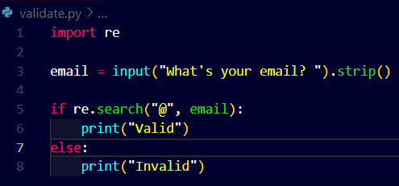

- define and check for patterns.
- built-in functions to check and extract data from inputs.
syntax: re.search(pattern, string, flags=0)
There are certain symbols which are useful in defining characters:
- "." - any character except a newline
- "*" - 0 or more repititions
- "+" - 1or more repititions
- "?" - 0 or 1 repitition
- {m} - m repitition
- {m, n} - m-n repitition
Now see the slow progression of our program using this re library:
- I will post code and its vulnerability



This is a much better way to check the syntax or format of the input email
This uses finite automata to check the inputted email address.
- This is a non=deterministics finite automata
- When input is given it will start from a so called start state and move to the first state
- Then it will decide, whether to stay or not in this first state:
- So when the program is reads my email : malan@harvard.edu it is going to follow the curved edge inthe below figure
- See in the below figure the curved recursive edge is labelled with "." which means any character but not empty
- It will check every characters before @ in the mail
- After checking and validating every character before @ it will follow the transition labelled with @.
- Now it will move to the next state which is doubled circle as it is the final state, which is an accepting state.It simply checks characters after @.
- Now if the computer finds itself in the second, accept state after reading all the characters of email, then it will accept it and state that it is indeed a valide state.
- If by some chance the computer gets stuck in the first state which is not a accepting state it will state that this is an invalid email.

Now lets move further:
- Lets assume that the Program now also checks for a proper domain name in the email and the users email has to end with ".edu" as well.


- We are telling python that it should pass the command as literally a raw string and it should not insert any backslash into it.
- The \.edu means that we literally want the email to be valid to end with .edu, because "." means any character in re .
Now we encounter a big problem!! Though our code looks quite good to validate emails what about this problem!!!

The python s literally validating a full sentence instead of just an email.
Because technically the sentence perfectly fits into the condition we have written.!!
Now to resolve this error we need some other special symbols!!
- ^ - matches the start of the string {carrot symbol}
- $ - matches the end of the string just before the newline at the end of the string {dollor}
- [] - set of characters
- [^] - complementing the set
Now what the carrot symbol does here is it says any character but except the one follows immediately it in the square brackets [].
e.g., [^@]
While the end " \.edu$ " says that literally the email must end with ".edu"
Lets add this feature to our code:


See above now our program looks much more efficient as it only allows 1 @ symbol throughout the email address.
Now here is a new and more advanced version of our code...
What's happening here?
- The [] brackets accept a set of characters as defined earlier, so here it says any number of characters from a-z, A-Z, 0-9 or an underscore "_".
- The syntax is as exactly shown in the line 5 below, no space, no separators. Just defining what you exactly want to accept.


See carefully the program denies anything that is outside of the scope of the defined characters.
- Now this set of characters looks like much more commonly used in the real world so there are shorter terms used to define this particular set of alphanumeric characters it is - "\w" which means a word!!
 This works the same...
This works the same...Now there so much of similar patterns defined for regular use but here is a small list which we will use! for REGULAR EXPRESSIONS.
- \d :- decimal digit
- \D :- no a decimal digit
- \s :- whitespace characters
- \S :- not a whitespace character
- \w :- word character ... as well as numbers and the underscore
- \W :- not a word character
Now as we move forward there arise a question can we accept a list of different domains in place of the last .edu term?
Well yes!!!
See how..
We need to use these:
- A | B :- either A or B
- (...) :- a group
- (?:...) :- non-capturing version


Here also if we want to use blank spaces you can do it like this..
 Works the same just now you can also type a blank space
Works the same just now you can also type a blank spaceNow we have another issue! we input the following input..

- It seems to be perfectly fine because it does follow our convention of regular expression.
- But the domain name we are expecting from the user tends to be an issue as we only accept it literally " .edu " i.e., all small characters, but here in this example this is in all caps!
- So we have special functioning of re, if you remember the FLAGS!!, these flags allow us to use some predefined functions that are :
- re.IGNORECASE
- re.MULTILINE
- re.DOTALL
Here it is!!

 before and after
before and afterWell some important keypoints to keep in mind:
- We can use strings and f strings
- We can store the \w value in variable or ask the user to input their custom regular expression.
- Infact we can for some reason store user's actual input without changing it.
Now we solve one another problem!!
You might have noticed that our gmails can have multiple dots " . " in them, but our current version of re is not letting users to input multiple dots.
So how do we solve this..?

Now here this comes to help

If you remember our basics theory then you may recall that:
a ? states either 0 or 1 repetition
So that means..


So as you can see now both the versions of our email are accepted,
the first one is standard : username@subdomain.domain.edu
the second one is : username@domain.edu
the program accepts both of them
- Besides regular expressions in python there are other functions in the re library:
One of them is this "re.match(pattern, string, flags=0)
Till now we were thinking that the user will type exactly we want and we will validate there data, but now let's assume that the user will nt type in the data that we want, so we are going to clean up their inputs.
We can do that using csv's to do it manually, but let's see how to do it with python.